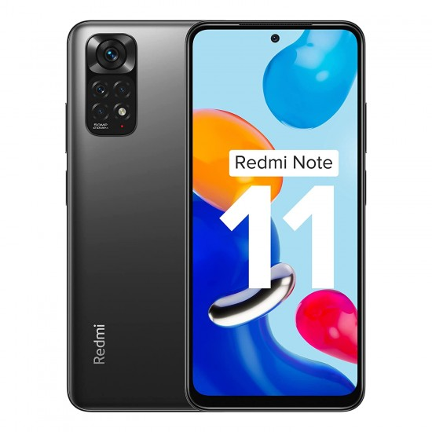

Redmi
.png)
Redmi is a subsidiary company owned by the Chinese electronics company Xiaomi. It was first announced in July 2013 as a budget smartphone line,[1] and became a separate sub-brand of Xiaomi in 2019 with entry-level and mid-range devices, while Xiaomi itself produces upper-range and flagship Xiaomi (formerly Mi) phones. Redmi phones use Xiaomi's MIUI user interface on top of Android. Models are divided into the entry-level Redmi, the mid-range Redmi Note, and the high-end Redmi K. The unrelated Mi A Android One series is positioned in the same market segment as Redmi devices, despite being part of the upper-range Xiaomi Mi lineup. The most significant difference from other Xiaomi smartphones is that Redmi uses less expensive components, allowing lower prices while retaining good specifications. In August 2014, The Wall Street Journal reported that in the second quarter of the 2014 fiscal year, Xiaomi had a market share of 4% of the China smartphone market;[2] Redmi sales were attributed as a contributing factor toward this ranking.[2] The Redmi A1 with stock Android was expected to launch in 2022.[3]
Here are some top Redmi mobiles are :-
1. Redmi Note 12 pro

Price - 27,300
2. Redmi Note 11
Price- 12,000
# Here are some of the top Companies of Mobiles are :-
- Click Here to see the mobiles of Vivo .
- Click Here to see the mobiles of Oppo .
- Click Here to see the mobiles of Redmi .
- Click Here to see the mobiles of Apple .